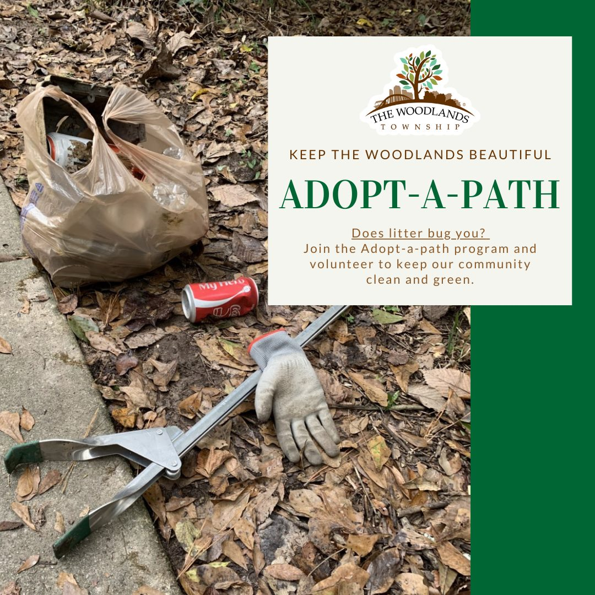

I contribute to my community through the Adopt a Path Cleanup Program. Having grown up beside a state forest, I cherish the memories of exploring its beauty. In an effort to extend this experience to others in my community, I actively engage in collecting litter and cleaning up not only the forest near my home but also other state forests in my hometown. My goal is to ensure that these natural spaces serve as inviting environments for people to explore, be adventurous, and enjoy a clean and pleasant recreational space. My commitment to enhancing the well-being of my community is reflected in these efforts to preserve and promote the beauty of our local landscapes.